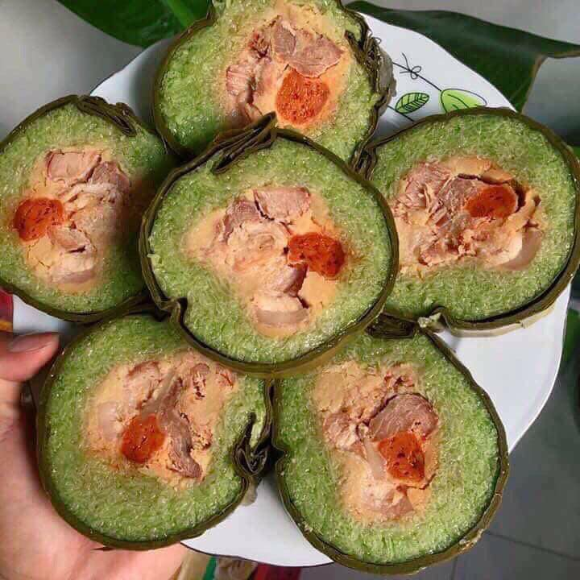
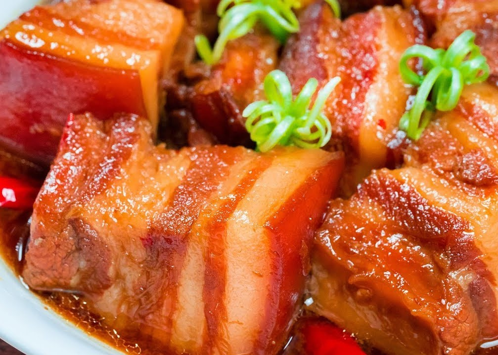

Việt Nam có văn hóa ẩm thực vô cùng đa dạng, mỗi vùng miền lại có những nét riêng vô cùng ấn tượng.
Nếu như ẩm thực miền Bắc chú trọng sự tinh tế và cầu kỳ, miền Trung đậm đà hương vị thì văn hóa ẩm thực miền Nam mang nét chân chất, giản đơn rất riêng.
Khi nhắc đến miền Nam thì người ta thường nghĩ đến câu “dưới sông có cá, trên bờ có rau”. Đây là một vùng đất phì nhiêu, màu mỡ được bồi đắp bởi hệ thống các sông, kênh, rạch chằng chịt. Miền Nam luôn được thiên nhiên ưu đãi rất nhiều sản vật đa dạng, phong phú. Ẩm thực Nam Bộ mang nét phóng khoáng và hoang dã bởi chính thiên nhiên trù phú và hào phóng của miền sông nước phương Nam.
1. Cơm tấm Sài Gòn - linh hồn của ẩm thực Sài Gòn
Món ăn đầu tiên phải kể đến trong ẩm thực miền Nam chính là món cơm tấm Sài Gòn. Món ăn này dường như được xem là linh hồn của ẩm thực Sài Gòn bởi người nơi này có thể ăn cơm tấm sáng trưa chiều tối.
Thêm nữa, quán cơm tấm ở Sài Gòn nó có rất nhiều, bất kể là cao cấp hay bình dân, máy lạnh hay quạt máy, vỉa hè lụp xụp hay quán xá khang trang… lúc nào cũng tấp nập thực khách ra vào.
Trước đây, cơm tấm Sài Gòn chỉ có 3 thứ là sườn, bì, chả, hoặc sang lắm thì có thêm trứng ốp-la chiên. Nhưng giờ đây món cơm này đã được biến tấu để thỏa mọi khẩu vị của thực khách với đủ mọi lựa chọn: sườn, bì, chả, mắm chưng, xíu mại, lạp xưởng, đùi gà,...
Nhưng nói đến cơm tấm thì người ta nhớ trước hết là miếng sườn nướng. Miếng sườn phải mỏng, vừa có thịt, xương và cả mỡ. Những quán nổi tiếng đều có bí quyết ướp sườn riêng để cho phẩn thịt khi ăn có vị đậm đà, dẻo thơm còn phần mỡ thì giòn tan, ăn không biết ngán.
Món ăn đầu tiên phải kể đến trong ẩm thực miền Nam chính là món cơm tấm Sài Gòn.2. Hủ tiếu Mỹ Tho
Nhắc đến ẩm thực Nam bộ mà không nhắc đến món hủ tiếu, đặc biệt là hủ tiếu Mỹ Tho thì quả là một điều thiếu sót. Khi đến Mỹ Tho, bạn sẽ thấy rất nhiều hàng quán vùng Cầu Quay đến vườn hoa Lạc Hồng tuy tuềnh toàng nhưng lại cực kỳ đông khách.
Để làm nên hương vị riêng cho hủ tiếu Mỹ Tho nổi tiếng là nhờ sự hoàn thiện từ khâu chọn bột gạo làm ra cọng bánh đến nồi nước lèo được chế biến kỳ công. Nhưng yếu tố quan trọng nhất của món ăn này chính là ở nồi nước lèo. Nước lèo phải có vị ngọt được tạo nên từ xương ống hầm kỹ, thịt và khô mực nướng cùng một số nguyên liệu và gia vị đặc trưng.
Một tô hủ tiếu đầy đủ gồm có hủ tiếu được trụng nước sôi vừa mềm thì trút ngay vào chiếc tô, cùng với rất nhiều nguyên liệu khác như giá, hẹ, sườn hoặc giò heo, bao tử, gan, mực non nướng, củ cải trắng, hành phi, củ hành tươi, cải bắc thảo, tiêu và sau cùng thì tưới lên một muôi nước lèo.
Nhắc đến ẩm thực Nam bộ mà không nhắc đến món hủ tiếu, đặc biệt là hủ tiếu Mỹ Tho thì quả là một điều thiếu sót.3. Cá lóc nướng trui
Cá lóc nướng trui là một món ăn dân dã đặc trưng cho miền Nam Bộ Việt Nam gắn liền với quá trình khai hóa đất phương Nam của dân tộc Việt. Đặc điểm của món cá lóc nướng trui dân dã là cá không cần sơ chế, nghĩa là không đánh vảy, không cạo nhớt, không mổ bụng, không tẩm ướp gia vị.
Cá lóc vừa bắt dưới sông lên, rửa sạch, được xuyên bằng một que dài từ miệng đến đuôi, sau vùi cá vào đống rơm khô rồi châm lửa đốt hoặc cắm que xuống đất lấy rơm phủ lên và đốt lửa cho đến khi tro tàn.
Nhưng điều đặc biệt là vật liệu thui cá nhất định phải là rơm thì thịt cá mới thơm và không bị hôi khói. Khi cá chín, cạo bỏ lớp vẩy đã cháy xém để lộ ra thịt cá trắng thơm phức. Xẻ dọc cá lấy bộ lòng, cho vào bát nước mắm tỏi, me, ớt đển làm nước chấm, tất cả đem đến một hương vị đồng quê khó mà cưỡng lại được.
Cá lóc nướng trui là một món ăn dân dã đặc trưng cho miền Nam Bộ Việt Nam4. Lẩu mắm
Mảnh đất miền Tây sông nước được thiên nhiên ưu ái ban tặng cho tôm cá đầy sông, cây trái trĩu cành. Mỗi mùa nước lũ ghé thăm, phù sa bồi đắp hằng hà các loại cá, cá chim, cá linh, cá sặc, cá rô,…
Sự dung hoà ấy đã giúp người dân nơi đây sáng tạo ra một biến thể từ cá độc đáo, đó là mắm. Và từ mắm có thể chế biến thành nhiều món ăn phong phú, mà trong đó lẩu mắm được xem là linh hồn của ẩm thực miền Nam.
Lẩu mắm là món ăn bắt nguồn từ Cần Thơ nhưng nguyên liệu chính là mắm cá sặc hay mắm cá linh ngon nhất của vùng Châu Đốc, thiên đường của những món mắm đồng. Phần nước dùng ngọt ngào được ninh từ xương heo hay vị thanh mát của dừa tươi là nền tảng của một phần lẩu ngon.
Lẩu mắm được xem là linh hồn của ẩm thực miền Nam.
Bạn có thể thoả thích kết hợp với vô số thực phẩm khác như thịt ba rọi, cá basa, cá tra hay những con tép, con tôm sần sật vị ngọt tự nhiên và những loại rau lục hay bông điên điển, bông súng, bông bí, cù nèo, rau đắng, rau nhút, bắp chuối,… Một nồi lẩu tuy bình dị nhưng lại chan hoà đầy đủ tầng tầng lớp lớp màu sắc thật sống động.
Lẩu mắm là món ăn bắt nguồn từ Cần Thơ nhưng nguyên liệu chính là mắm cá sặc hay mắm cá linh của vùng Châu Đốc5. Bánh tráng phơi sương Trảng Bàng
Người dân Tây Ninh thường bảo với nhau là về Tây Ninh mà chưa ăn món bánh tráng phơi sương thì chưa biết Tây Ninh, bởi vì đây được xem là một món ăn nổi tiếng của vùng đất này, không những thế món ăn này còn được nhiều tỉnh thành biết đến trên cả nước. Bánh tráng phơi sương có một hương vị rất riêng cho món cuốn phổ biến ở khu vực Nam Bộ.
Người dân Tây Ninh thường bảo với nhau là về Tây Ninh mà chưa ăn món bánh tráng phơi sương thì chưa biết Tây Ninh
Để làm ra được một chiếc bánh phơi sương chất lượng thì tất cả các khâu từ việc lựa chọn nguyên liệu đến khi tráng bánh và đem phơi đều được làm một cách tỉ mỉ và cẩn thận.
Đặc biệt, sau khi bánh nướng xong thì sẽ được đem đi phơi sương và vào thời điểm tờ mờ sáng khi những chiếc bánh đủ độ ẩm và mềm thì những người làng nghề sẽ đi thu gom lại.
Để làm ra được một chiếc bánh phơi sương chất lượng thì tất cả các khâu đều được làm một cách tỉ mỉ và cẩn thận.
Những lá bánh tráng đẫm sương Trảng Bàng bình dị thường được ăn kèm với thịt hoặc cá lóc nướng, cá lóc hấp... cùng với đó là các loại rau có vị chát chát, chua chua như lộc vừng, trâm ối, sơn máu, rau mặt trăng, chùm mòi hay bứa, dưa leo xắt dài, củ kiệu chua ngọt, giá sống góp phần làm nên hương vị rất riêng. Trong khung cảnh thân mật, chấm nước mắm pha chua ngọt, thưởng thức hương vị đồng quê vô cùng dân dã và khó quên.
6. Bánh xèo miền Tây
Bánh xèo là món ăn dân dã có mặt ở khắp mọi miền đất nước. Gốc tích của bánh xèo xuất hiện đầu tiên ở miền Trung vùng đất đầy nắng và gió, sau đó được lan truyền ra nhiều nơi khác trên cả nước. Ở mỗi miền bánh xèo lại được biến tấu theo nhiều cách khác nhau nhưng luôn mang hương vị đậm đà, khó cưỡng lại được.
Bánh xèo có mặt ở miền Tây đã từ rất lâu đời, đến nay đã trở thành một món ăn không thể thiếu trong những buổi hội hè, vui chơi của người dân nơi đây. Bánh xèo miền Tây mang trong mình những nét rất riêng, cái "hồn cốt" của ẩm thực miền Tây Nam Bộ mà không thể lẫn vào đâu được.
Bánh xèo miền Tây mang trong mình những nét rất riêng, cái "hồn cốt" của ẩm thực miền Tây Nam Bộ mà không thể lẫn vào đâu được.
Nếu như bánh xèo miền Trung được đúc bằng khuôn và thường được ăn kèm với nước mắm chua ngọt, hoặc mắm nêm pha với đậu phộng thơm ngon và béo ngậy, thì bánh xèo ở miền Tây lại có kích thước rất lớn và mỏng hơn nhiều. Đặc điểm này tượng trưng cho lối sống thoải mái, phóng khoáng đặc trưng của người dân miền Tây. Thưởng thức một đĩa bánh xèo ở đây thôi là cũng đủ để bạn cảm thấy no nê quên lối về.
7. Gỏi cuốn
Gỏi cuốn ngon bởi bàn tay cuốn chặt các thứ rau sống bún tôm thịt với nhau và nước chấm đậm đà, bởi làm gỏi cuốn thì có nêm nếm chi đâu. Nước chấm biến tấu theo nhiều sở thích, tương hột với đồ chua và đậu phộng, nước mắm chua ngọt hay mắm nêm với thơm băm….thứ gì cũng làm món ăn chơi này thêm đặc sắc hơn cả.
Gỏi cuốn tôm thịt
BỮA CƠM NHÀ
Khi nhắc đến miền Nam thì người ta thường nghĩ đến câu “dưới sông có cá, trên bờ có rau”. Đây là một vùng đất phì nhiêu, màu mỡ được bồi đắp bởi hệ thống các sông, kênh, rạch chằng chịt. Miền Nam luôn được thiên nhiên ưu đãi rất nhiều sản vật đa dạng, phong phú. Ẩm thực Nam Bộ mang nét phóng khoáng và hoang dã bởi chính thiên nhiên trù phú và hào phóng của miền sông nước phương Nam.
Thực đơn ngày 1:
1. Cá kèo kho rau răm
2. Đậu cô ve xào lòng gà
3. Rau muống xào tỏi
4. Canh bí nấu thịt bằm
5. Món tráng miệng: sữa chua trái cây
Thực đơn ngày 1
Thực đơn ngày 2:
1. Tôm rim nước dừa
2. Mực xào dứa chua ngọt
3. Đậu hũ chiên giòn
4. Canh rau ngót thịt bằm
5. Món tráng miệng: trái cây tươi
Thực đơn ngày 2
Thực đơn ngày 3:
1. Thịt kho trứng cút
2. Gỏi ngó sen tôm thịt
3. Khổ qua xào trứng
4. Canh nấm đậu hũ
5. Món tráng miệng: bánh plan
Thực đơn ngày 3
Thực đơn ngày 4:
1. Mực tẩm bột chiên giòn
2. Thịt bò xào đậu rồng
3. Giò heo hầm hạt sen
4. Canh bông mướp
5. Món tráng miệng: chè khúc bạch
Thực đơn ngày 4
Thực đơn ngày 5:
1. Cá tai tượng chiên xù ăn cùng rau sống
2. Gỏi đu đủ tai heo
3. Ốc móng tay xào ớt chuông
4. Canh cua rau đay
5. Món tráng miệng: trái cây tươi
Thực đơn ngày 5
Thực đơn ngày 6:
1. Tôm hấp bia
2. Bò cuộn nấm kim chi nướng
3. Rau củ xào thập cẩm
4. Canh chua cá quả
5. Món tráng miệng: chè bưởi
Thực đơn ngày 6
Thực đơn ngày 7:
1. Thịt gà kho ngũ vị
2. Mực trứng nướng sa tế
3. Kim chi
4. Canh ngao mồng tơi
5. Món tráng miệng: Sương sâm hạt é
Thực đơn ngày 7
Ẩm thực miền Nam chịu ảnh hưởng từ ẩm thực của các nước như Trung Quốc, Thái Lan.. nên khẩu vị cũng thường vị đậm đà, chua, ngọt, cay từ me, ớt, sả và đặc biệt thích dùng nước mắm trong món kho, chấm.
Trong thực đơn hằng ngày cho gia đình miền Nam, cũng đây là nơi sản sinh ra nhiều loại khô, mắm từ nhiều loại cá nước ngọt và mặn vô cùng phong phú. Nguồn hải sản dồi dào như tôm, cua, đặc biệt là cá cũng là đặc điểm của các món ăn nơi đây.
Đất phù sa màu mỡ với hàng loạt cây trồng đa dạng làm cho những món ăn gia đình miền Nam luôn có rau xanh đủ loại để nấu canh hay xào. Thời tiết ổn định với hoa màu quanh năm, nguồn thức ăn dồi dào cũng giúp các bữa cơm có thể xoay chuyển, lặp đi lặp đi các món quen thuộc, hay biến tấu nhỏ chứ không cần phải thay đổi theo thời tiết.
CỖ TẾT
Nét đặc trưng ấy được thể hiện phần nào qua mâm cỗ ngày Tết Nguyên Đán của ba miền. Trái ngược với miền Bắc lạnh lẽo, miền Nam vào Tết không khí vẫn còn vương chút nắng chút nóng, cây trái sum sê nên mâm cỗ ngày Tết miền Nam có phần phong phú.
Những món ăn của người miền Nam trong những ngày lễ đón năm mới hầu hết là đồ nguội vì tiết trời ở đây nắng nóng rất dễ bị hỏng đồ ăn. Với những chiếc bánh tét đặc trưng miền Nam thay cho bánh chưng, loại bánh này cũng được làm từ gạo, đỗ xanh và nhân thịt nhưng được gói dài và xắt thành từng miếng hình tròn vừa ăn. Có nhiều loại bánh tét cho dịp này như bánh tét chay, bánh tét mặn, bánh tét ngọt hay bánh tét chiên giòn thơm.
1. Bánh tét
Cũng giống như miền Trung bánh tét cũng là món không thể trong ngày tết của người dân nơi đây. Bánh tét nơi đây cũng được gói thành hình trụ dài giống như bánh tét miền Trung. Người dân miền Nam thường gói bánh tét trước Tết khoảng 10 ngày để cúng tổ tiên cũng như làm quà biếu trong dịp Tết Nguyên Đán.

Bánh tét miền Nam2. Canh khổ qua
Canh khổ qua là món ăn ngày Tết không thể thiếu của người dân miền Nam, món ăn này không chỉ có tác dụng giải mỡ, thanh nhiệt, phù hợp với thời tiết nắng ấm của miền Nam mà theo quan niệm dân gian, món canh khổ qua sẽ giúp xua đi những khó khăn của một năm mới để cầu mong một năm mới đến với những điều tươi đẹp hơn. Tuy giàu có về thịt thà, nhưng bữa cơm ngày Tết miền Nam vẫn không thể thiếu món này.
Canh khổ qua là món ăn ngày Tết không thể thiếu của người dân miền Nam3. Củ kiệu
Củ kiệu của miền Nam thay cho củ hành muối miền Bắc được ăn kèm với bánh tét. Để bàn tiệc trông rực rỡ hơn và bớt cảm giác bị ngấy vì thịt và bánh, mâm cỗ sẽ có thêm món cháo cá ám ăn kèm với rau thơm và cây chuối non xắt mỏng.
Tôm khô củ kiệu ăn kèm bánh tét4. Thịt kho tàu
Đây là món ăn xuất hiện cả trong bữa cơm hàng ngày và trong mâm cỗ ngày Tết của người dân miền Nam. Với nguyên liệu phổ biến, thịt được ướp gia vị và nấu nhừ cùng trứng chim cút. Món thịt kho tàu đạt yêu cầu khi có màu vàng cánh gián của nước sốt béo ngậy.

Thịt kho tàu5. Gỏi cuốn
Món ăn này được kết hợp từ nhiều nguyên liệu như: thịt, cá, tôm cùng với các loại rau, trái cây và bún, được bao bọc bởi lớp vỏ bánh mềm mướt. Miền Bắc hoặc miền Trung thường gọi là bánh cuốn nhưng Nam Bộ thường sử dụng tên phổ biến là gỏi cuốn, món ăn thanh mát, chống ngấy ngày Tết.
Gỏi cuốn món ăn thanh mát, chống ngấy ngày Tết.6. Lạp xưởng
Lạp xưởng là món ăn phổ biến của của người miền Nam, thường là tự làm vào ngày Tết để ăn hoặc đãi khách đến chơi như một món quà đầu năm đầy ý nghĩa.
Lạp xưởng trong Nam có nhiều loại: lạp xưởng khô, lạp xưởng tươi, lạp xưởng tôm, lạp xưởng cá,… rất dễ kết hợp với món ăn khác cho ra một món ăn hoàn toàn mới mang hương vị đặc trưng của lạp xưởng.
Lạp xưởng là món ăn phổ biến của của người miền Nam
CỖ CƯỚI HỎI
Đặc trưng vùng miền khác nhau dẫn đến văn hóa cưới hỏi khác nhau, trong đó thực đơn cỗ cưới là yếu tố thể hiện rõ rệt nhất. Cỗ cưới ba miền có nhiều điểm độc đáo riêng mà không phải cặp đôi nào cũng hiểu hết.
Khẩu vị người miền Nam đa phần nhiều người ưa ngọt; khi nấu người miền Tây sử dụng vị ngọt của đường để nêm trong nhiều món ăn; từ canh cho đến các món kho, xào,… Bên cạnh đó các loại bánh đặc sản miền Nam như bánh men, bánh ít, bánh tét,… Cũng mang vị ngọt đặc trưng.
Ngay nay, việc du nhập nét văn hóa ẩm thực phương vào Việt Nam đã ảnh hưởng không nhỏ đến cấu trúc món ăn trong thực đơn đám cưới ở miền Nam. Từ đó một thực đơn có trúc 3 phần rõ rệt: đầu tiên là món khai vị, quan trọng nhất làm món chính và cuối cùng là món tráng miệng.
Tuy bị giao thoa giữa nhiều văn hóa ẩm thực khác nhau nhưng các thực đơn đám cưới miền Nam vẫn giữa được phần nào hương vị truyền thống, bình dân vốn có bao đời.
Phong tục cũng như thực đơn ngày cưới của người miền Nam có những nét rất riêng và độc đáo
Thực đơn cỗ cưới miền Nam gồm:
- Khai vị: Soup cua, soup hải sản, gỏi ngó sen, gỏi củ hủ dừa, gỏi tôm,…
- Món rán: chả giò chiên, tôm chiên, món phụ nữa là những món chiên hay thịt nguội: tôm chiên, mực chiên,…
- Món chính: gà bó xôi, gà nướng muối ớt ăn với xôi, tôm hấp bia, bò né, cháo gà ác, cơm chiên dương châu, heo sửa quay, móng heo chiên giòn, cơm kim quy,….
- Một số món lẩu như: lẩu thái, lẩu hải sản, lẩu cá,...
- Tráng miệng: hoa quả (trái cây), một số loại bánh, rau câu, yaourt,...
Một lưu ý quan trọng trong lựa chọn món ăn chính ở đám cưới miền Nam là sẽ có một số món ăn kiêng kỵ trong đơn đám cưới; đó là các món: canh chua, canh đắng và món mắm. Với quan niệm những món ăn này sẽ mang đến những điềm không lành cho cặp đôi mới cưới.